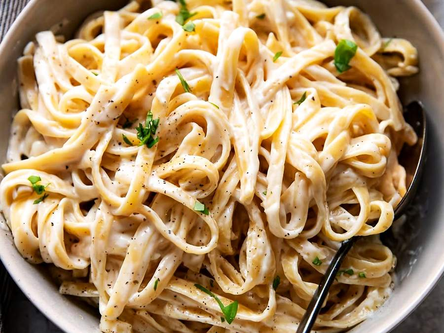

Macarrão Alfredo
Creme de leite, parmesão e alho. Molho branco cremoso pronto em 15 minutos.
Tempo de preparo
15 minutos
Louça suja
2 panelas
Porções
2 porções
Dificuldade
Fácil
Imagem da receita

Vídeo do preparo
Ingredientes
- 250 g de macarrão (fettuccine ou espaguete)
- 1 caixinha de creme de leite (200 g)
- 100 g de queijo parmesão ralado
- 2 colheres de sopa de manteiga
- 2 dentes de alho picados
- Sal e pimenta-do-reino a gosto
Modo de preparo
- Coloque a água para ferver com sal e cozinhe o macarrão até ficar al dente.
- Enquanto isso, derreta a manteiga em uma panela e doure o alho por 1 minuto em fogo baixo.
- Junte o creme de leite e mexa até aquecer, sem deixar ferver.
- Acrescente o parmesão aos poucos, mexendo até derreter e engrossar.
- Tempere com sal e pimenta-do-reino.
- Escorra o macarrão e misture ao molho na própria panela.
- Sirva imediatamente com mais parmesão por cima.
Dica: não deixe o creme de leite ferver. Se ferver, o molho talha e fica com aspecto de coalhada.